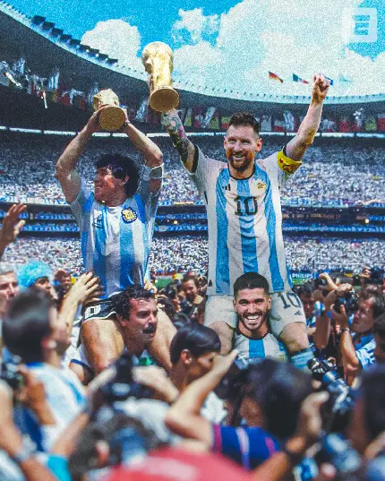

مهارت رهبری کردن خود و دیگران در روانشناسی ورزشی

رهبری در روانشناسی ورزشی فقط یک نقش نیست، بلکه یک مجموعه مهارت ذهنی و رفتاری است.
Leadership in sport psychology is not just a role; it is a set of mental and behavioral skills.
توانایی رهبری خود به ورزشکار کمک میکند روی احساسات، تمرکز، تصمیمگیری و انگیزه خود کنترل داشته باشد.
Self-leadership helps an athlete control their emotions, focus, decision-making, and motivation.
رهبری دیگران شامل تاثیرگذاری مثبت، ارتباط مؤثر، ایجاد انگیزه و ساختن فرهنگ تیمی است.
Leading others includes positive influence, effective communication, motivation, and building team culture.
رهبری فردی در ورزش (Self-Leadership)
رهبری فردی یعنی توانایی هدایت، کنترل و مدیریت خود در مسیر رسیدن به عملکرد بهتر.
Self-leadership means the ability to guide, control, and manage oneself toward better performance.
این مهارت نقطه شروع رهبری واقعی است زیرا ورزشکاری که نمیتواند خود را مدیریت کند، قادر به رهبری دیگران نخواهد بود.
This skill is the starting point of real leadership, because an athlete who cannot manage themselves cannot lead others.
۱. خودآگاهی (Self-Awareness)
خودآگاهی یعنی شناخت دقیق از نقاط قوت، ضعف، هیجانات و الگوهای رفتاری.
Self-awareness means having an accurate understanding of strengths, weaknesses, emotions, and behavioral patterns.
تحقیقات نشان میدهد ورزشکارانی که سطح بالاتری از خودآگاهی دارند، تصمیمگیری سریعتر و استرس کمتری تجربه میکنند.
Research shows that athletes with higher self-awareness make faster decisions and experience less stress.
۲. تنظیم هیجان (Emotion Regulation)
کنترل هیجانات شدید مثل اضطراب، عصبانیت یا هیجان بیش از حد، یکی از مهمترین پایههای رهبری خود است.
Controlling intense emotions such as anxiety, anger, or excessive excitement is one of the key foundations of self-leadership.
استفاده از تکنیکهایی مانند تنفس عمیق، گفتوگوی درونی مثبت، و تصویرسازی ذهنی باعث بهبود عملکرد ذهنی میشود.
Using techniques such as deep breathing, positive self-talk, and mental imagery improves mental performance.
۳. خودانگیزشی (Self-Motivation)
خودانگیزشی یعنی توانایی ادامه مسیر حتی زمانی که شرایط سخت است یا انگیزه کم میشود.
Self-motivation means the ability to keep going even when conditions are difficult or motivation decreases.
ورزشکاری که اهداف درونی و ارزشمند دارد، پایدارتر و متمرکزتر عمل میکند.
An athlete who has meaningful internal goals performs more steadily and with greater focus.
۴. هدفگذاری مؤثر (Effective Goal Setting)
هدفگذاری دقیق به ورزشکار کمک میکند مسیر پیشرفت را روشن و قابل اندازهگیری کند.
Accurate goal setting helps the athlete create a clear and measurable path of progress.
استفاده از مدل SMART بهترین روش برای تعیین اهداف ورزشی حرفهای است.
Using the SMART model is the best method for setting professional athletic goals.
رهبری دیگران در ورزش (Leadership of Others)
رهبری دیگران یعنی توانایی هدایت، حمایت و تأثیرگذاری مثبت بر اعضای تیم یا شاگردان.
Leadership of others means the ability to guide, support, and positively influence team members or trainees.
یک رهبر ورزشی فقط دستور نمیدهد، بلکه الهامبخش است و رفتار او الگوی دیگران میشود.
A sports leader does not merely give orders; they inspire and become a behavioral model for others.
۱. نفوذ مثبت (Positive Influence)
رهبران مؤثر با رفتار، انرژی و طرز فکر خود، فضای تیم را به سمت رشد و همکاری هدایت میکنند.
Effective leaders, through their behavior, energy, and mindset, guide the team toward growth and cooperation.
الگو بودن در نظم، تلاش و کنترل هیجان بیشترین تأثیر را بر عملکرد تیم دارد.
Being a role model in discipline, effort, and emotional control has the greatest impact on team performance.
۲. ارتباط مؤثر (Effective Communication)
رهبران ورزشی با ارتباط شفاف، محترمانه و دقیق میتوانند پیام خود را بدون تنش منتقل کنند.
Sports leaders can deliver their message clearly, respectfully, and accurately through effective communication.
گوشدادن فعال، بازخورد سازنده و اجتناب از سرزنش از مهارتهای ارتباطی ضروری رهبری هستند.
Active listening, constructive feedback, and avoiding blame are essential communication skills in leadership.
۳. مدیریت تنش و تعارض (Conflict Management)
هر تیم در طول فصل با اختلافنظر، فشار روانی و رقابت داخلی روبهرو میشود.
Every team faces disagreements, psychological pressure, and internal competition during the season.
رهبر موفق تنشها را به فرصت تبدیل میکند و تمرکز بازیکنان را از «من» به «ما» منتقل میسازد.
A successful leader turns conflicts into opportunities and shifts players’ focus from “me” to “we.”
۴. انگیزهبخشی به تیم (Team Motivation)
رهبر تیم باید بتواند امید، انرژی و هدف مشترک را در بازیکنان تقویت کند.
The team leader must be able to strengthen hope, energy, and shared purpose among players.
حمایت عاطفی، تشویق، و یادآوری پیشرفت تیم باعث افزایش اعتماد و تمرکز گروه میشود.
Emotional support, encouragement, and reminding the team of their progress increase group confidence and focus.
ترکیب رهبری فردی و رهبری دیگران
یک رهبر واقعی زمانی شکل میگیرد که بتواند هم خود را مدیریت کند و هم دیگران را به سمت رشد هدایت نماید.
A true leader emerges when they can manage themselves and guide others toward growth.
ورزشکار یا مربیای که خودآگاهی، کنترل هیجان و هدفگذاری دقیق دارد، میتواند در کنار آن با ارتباط مؤثر و نفوذ مثبت تیم را به سطح بالاتری برساند.
An athlete or coach with self-awareness, emotional control, and precise goal-setting can elevate the team through effective communication and positive influence.
رهبری در روانشناسی ورزشی یک مهارت ذاتی نیست؛ بلکه مجموعهای از تواناییهایی است که از طریق تمرین، تجربه و یادگیری قابل تقویت هستند.
Leadership in sport psychology is not an innate talent; it is a set of abilities that can be developed through training, experience, and learning.
به طور کلی :
رهبری کردن خود و دیگران یکی از مهمترین عوامل موفقیت فردی و تیمی در ورزش است.
Leading oneself and others is one of the most important factors in individual and team success in sports.
این مهارت نهتنها عملکرد ورزشی را تقویت میکند، بلکه باعث افزایش اعتمادبهنفس، هماهنگی گروهی و ثبات ذهنی میشود.
This skill not only enhances athletic performance but also increases confidence, team cohesion, and mental stability.
هر ورزشکاری که میخواهد به سطح حرفهای برسد، باید قبل از هر چیز یاد بگیرد چگونه رهبر خود باشد و سپس رهبر دیگران.
Any athlete who wants to reach a professional level must first learn to lead themselves and then lead others.